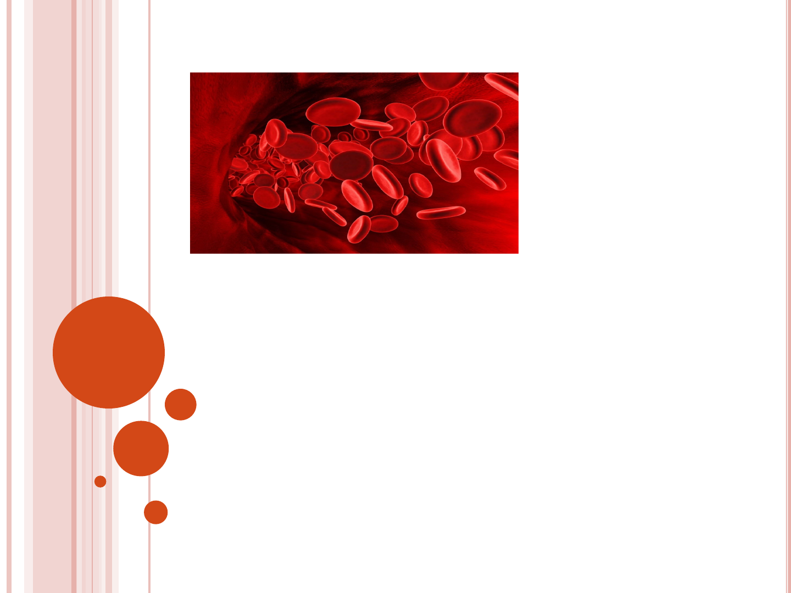
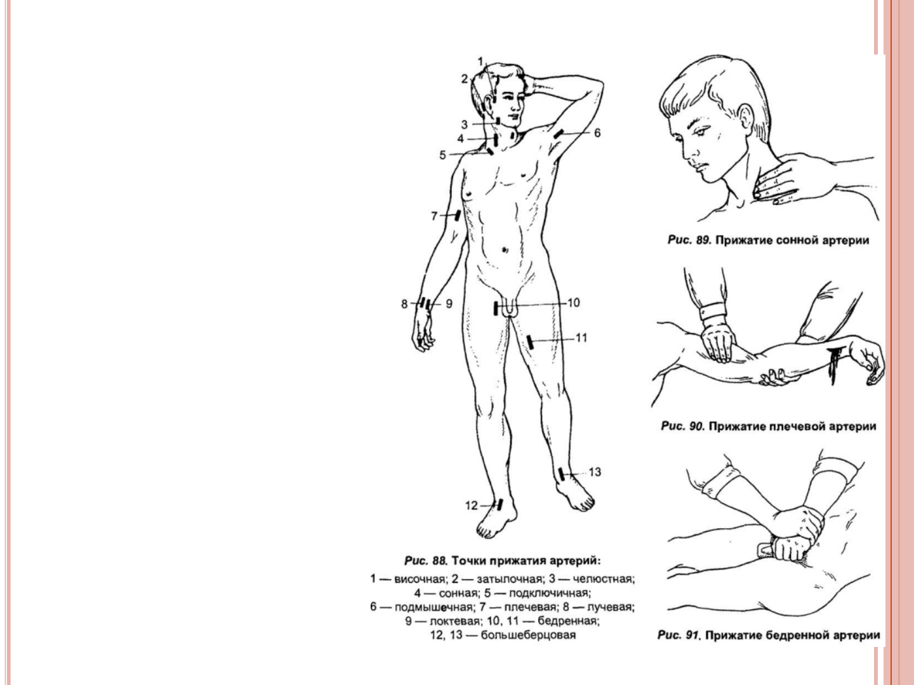
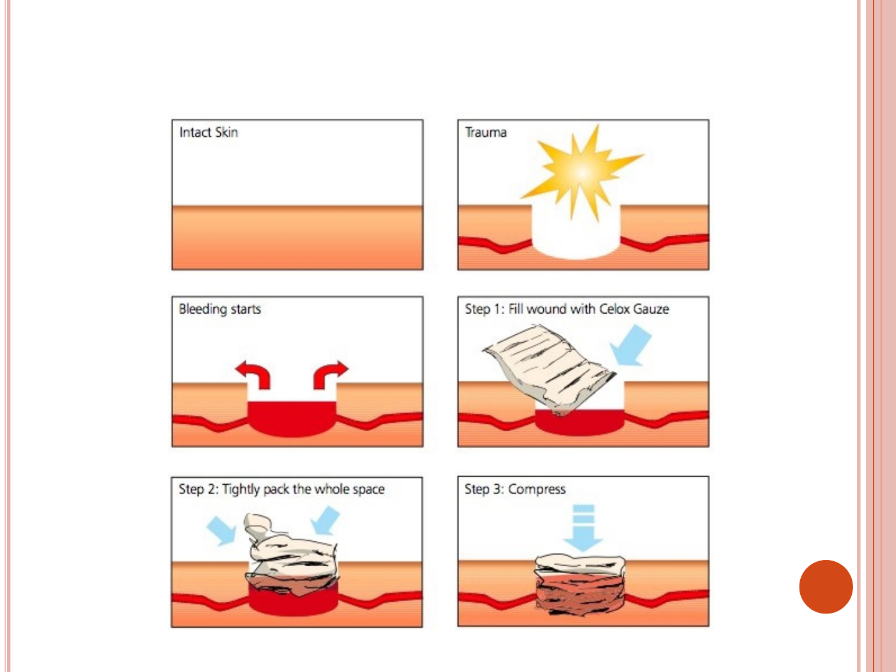
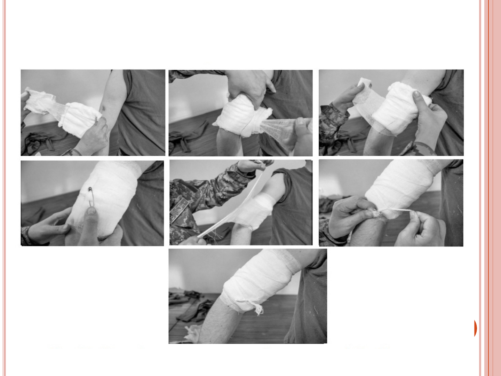
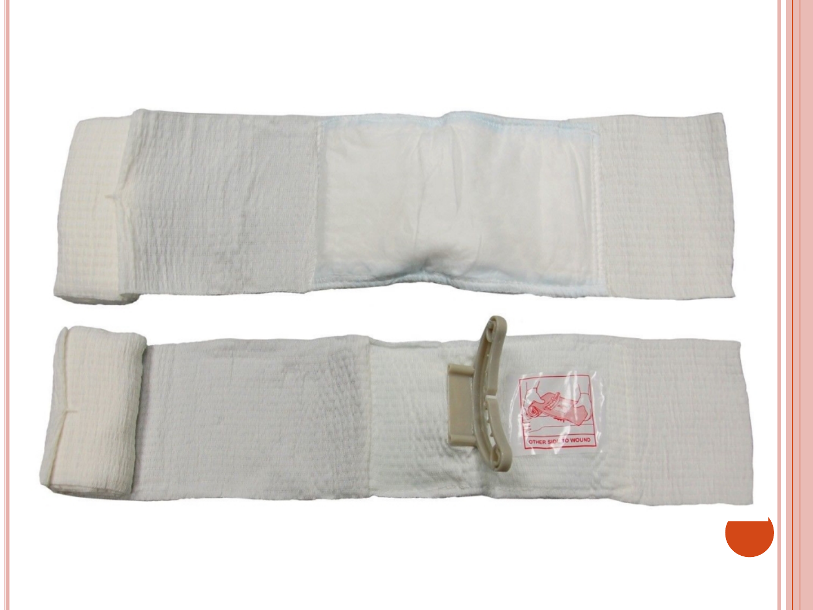
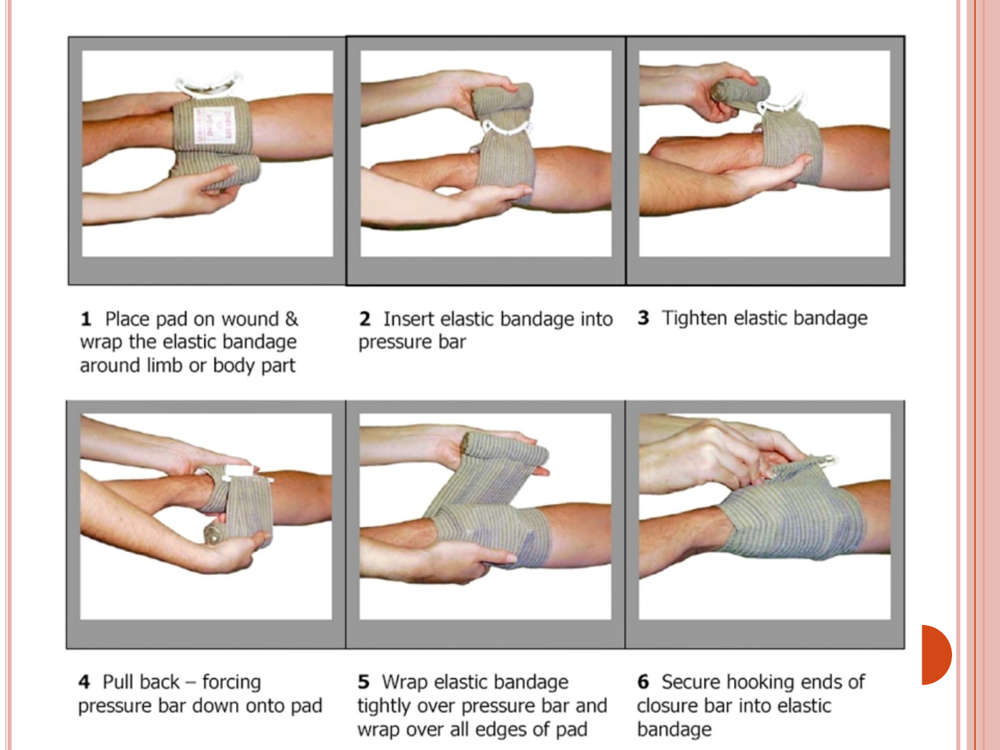
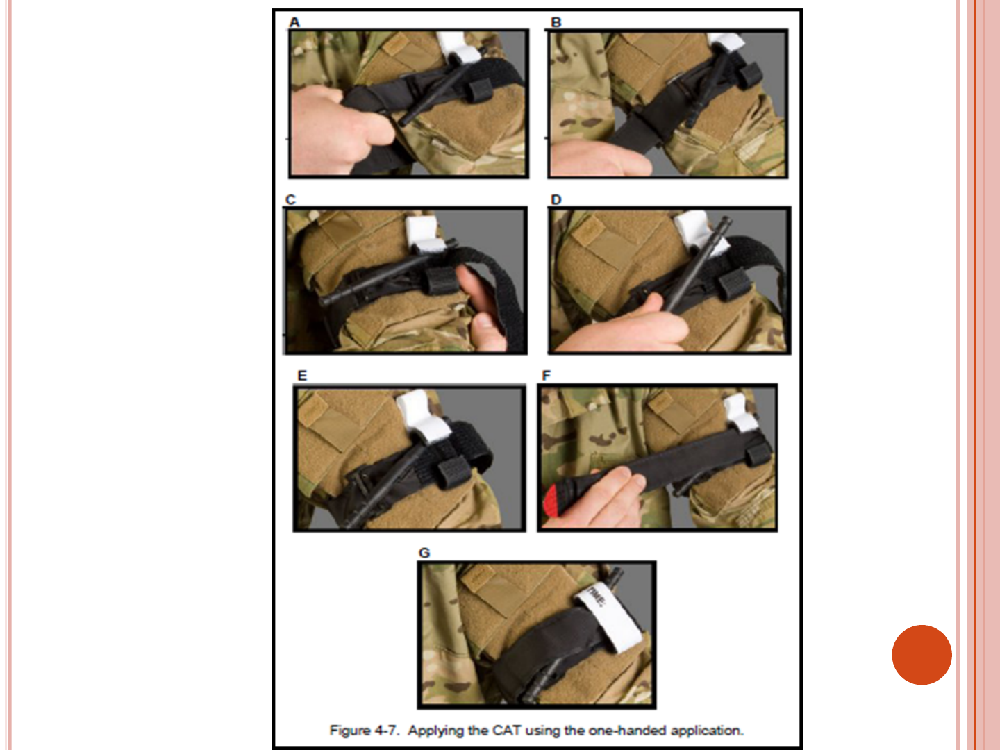

ХАРКІВСЬКИЙНАЦІОНІЛЬНИЙУНІВЕРСИТЕТ
ІМЕНІВ.Н.КАРАЗІНА
МЕДИЧНИЙФАКУЛЬТЕТ
КАФЕДРАСІМЕЙНОЇМЕДИЦИНИКАФЕДМЕДИЦИНИ
ДОМЕДИЧНА ДОПОМОГА В
ЕКСТРЕМАЛЬНИХ СИТУАЦІЯХ
КРОВОТЕЧІ ТА МЕТОДИ ЇХ ЗУПИНКИ
к. мед. н. Литвин О. І

КРОВОТЕЧІ ТА МЕТОДИ ЇХ ЗУПИНКИ
Кровотеча – це
витікання крові
з кровоносних
судин у разі
порушення їх
цілісності.
Кровотечі, їх класифікації-
1.За місцем, куди виливається кров:
- Внутрітканинне («синяк»)
- зовнішнє
- внутрішнє
2. Залежно від виду пошкодженої судини: артеріальне, венозне,
капілярне, паренхіматозне
3. За перебігом: гостра (зі швидкістю 25 мл/хв) та хронічна (протягом
тривалого часу, малими порціями).
4. За ступенем тяжкості: Iступінь - легка ступінь (втрата ОЦК 15% - 500 мл.),
IIст. середня (втр. ОЦК 15-30% - 750-1500 мл.), III ст. важка (втр. ОЦК 30-40% -
1500-2000 мл.), IV ст. масивна (втр. ОЦК понад 40% - більше 2000 мл).

ОЗНАКИ АРТЕРІАЛЬНОЇ, ВЕНОЗНОЇ ТА
КАПІЛЯРНОЇ КРОВОТЕЧ:
Ознаки артеріальної кровотечі: швидка та значна
кровотеча (кров “б'є фонтаном”, пульсує, яскраво-
червоного кольору) призводить до значної
крововтрати протягом короткого часу.
Ознаки венозної кровотечі з рани: кров
безперервно витікає з рани темно-червоного
кольору; залежно від діаметра пошкодженої вени
кровотеча може бути від незначної до інтенсивної.
Капілярна кровотеча виникає внаслідок
пошкодження дрібних судин шкіри, підшкірної
клітковини та м'язів. У цьому випадку кровоточить
уся ранова поверхня. Колір темно-червоний. Ця
кровотеча є небезпечною при захворюваннях, що
супроводжуються зниженням здатності крові
згортатися

ТЕХНІКИ ЗУПИНКИ
АРТЕРІАЛЬНИХ КРОВОТЕЧ
Притискання артерії (проводиться
вище місця, що кровоточить, де
артерія може бути притиснута до
кістки пальцем, кулаком, долонею)
Джгут чи закрутка. Матеріалом для
джгута може бути гумова трубка,
косинка, носова хустинка галстук та
ін. Джгут чи закрутку накладають на
кінцівки джгут або закрутка
накладається не більше, ніж на 1,5-2
год., а у холодний час і при
променевих ураженнях не більше, як
на 1 год. Час накладання джгута або
закрутки обов'язково повинен бути
відмічений на папірці, який
підкладають під джгут, або на самій
пов'язці. Якщо з моменту
накладанняджгута або закрутки
пройшло більше 1-2 год., то необхідно
послабити джгут – до появи рожевого
кольору кінцівки і відновлення
чутливості. Роблять це повільно, з
тим, щоб у випадку відновлення
кровотечі потік крові не виштовхнув
кров’яний згусток, який утворився у
рані.

ЗУПИНКА КРОВОТЕЧІ З РАНИ ЗА ДОПОМОГОЮ
ТАМПОНАДИ

ТАМПОНУВАННЯ РАНИ І П П - І
Порядок накладання пакету перев'язувального
індивідуального (ІПП):
Відкривати пакет потрібно після того, як місце
поранення (опіку) буде підготовлено для накладення
пов'язки. У тих випадках, коли доступу до рани
перешкоджає одяг або взуття, їх треба розрізати (краще
швами), також можна зробити й інші розрізи.
Зовнішню оболонку розривають за наявним надрізом.
Дістаємо шпильку та перев'язувальний матеріал,
упакований у паперову упаковку.
Паперову упаковку знімають за допомогою нитки
розрізу.
Пов'язку розгортають таким чином, щоб не торкатися
руками тих поверхонь ватно-марлевих подушечок, які
прилягатимуть до рани.
Ватно-марлеві подушечки беруть руками лише з боку
прошивки кольоровими нитками.

ТАМПОНУВАННЯ РАНИ І П П - ІІ
6. Якщо пов'язку накладають на одну рану,
другу подушечку слід укласти поверх першої.
7. Якщо пов'язку накладають на дві рани,
рухливу подушечку відсувають від нерухомої
на відстань, щоб можна було закрити обидві
рани.
8. Подушечки закріплюють на ранах за
допомогою бинта.
9. Кінець бинта закріплюють шпилькою на
поверхні пов'язки або зав'язують.
10. Зовнішню прогумовану оболонку ППІ
застосовують для накладення оклюзійної
пов'язки при пораненні грудної клітки.
ТЕХНІКИ ЗУПИНКИ КРОВОТЕЧ З РАНИ ЗА
ДОПОМОГОЮ ТАМПОНУВАННЯ РАНИ КРОВОСПИННИМ
ЗАСОБОМ НА МАРЛЕВІЙ ОСНОВІ

ТЕХНІКИ ЗУПИНКИ ВЕНОЗНИХ ТА
КАПІЛЯРНИХ КРОВОТЕЧ
Накладення пов'язки, що давить, - найпростіший
спосіб зупинки незначної кровотечі. Для такої
пов'язки використовують пакет індивідуальний
(ППІ).
Пов'язку не слід накладати занадто туго. Якщо
після накладання пов'язки, кінцівка посиніє, це
означає, що пов'язка стиснула вени, відтік крові до
серця утруднений і вона застоюється. У разі
кровотеча може лише посилитися. Збліднення
кінцівки нижче за місце накладання тугої пов'язки
означає повне припинення кровообігу.
Для накладання тугої пов'язки необхідно підняти
поранену кінцівку вище за рівень серця, на місце
рани (де вже є ППІ) покласти валик з вати і за
допомогою бинтів або підручних засобів накласти
пов'язку, що давить.

Техніки зупинки кровотеч з рани за допомогою
тампонування рани на марлевій основі
ТЕХНІКИ ЗУПИНКИ ВЕНОЗНИХ ТА
КАПІЛЯРНИХ КРОВОТЕЧ
Ізраїльський бандаж – є гібридом між бинтом, ІПП,
турнікетом (засобом для перетягування кінцівки) та
щільною пов'язкою.
Складається з:
прокладки, що не прилипає до рани,
аплікатора для тиску на рану,
вторинної стерильної обмотки для бинтування,
кріплення для утягування.
Упаковка складається з двох частин: верхньої та
внутрішньої, також герметичної та стерильної. Таким
чином, пов'язка має два шари захисту від бруду і
стерильна і герметична навіть у тому випадку, якщо
зовнішня упаковка пошкодилася або надірвана.
Завдяки гладкості внутрішньої сторони верхньої
упаковки, після розтину її можна використовувати як
оклюзійну пов'язку (що перекриває доступ повітря до
рани, для герметизації).

ІЗРАЇЛЬСЬКИЙ БАНДАЖ


ЗУПИНКА АРТЕРІАЛЬНОЇ КРОВОТЕЧІ З КІНЦІВОК
ЗА ДОПОМОГОЮ ДЖГУТА-ТУРНІКЕТУ
Техніка накладання турнікету:
Накладіть джгут у верхній частині плеча чи
стегна, після чого просмикніть ремінь у скобу,
затягніть його до упору та зафіксуйте вільну
частину ремінця, використовуючи застібку
велкро.
Проводьте обертання стрижня фіксатора до
припинення кровотечі.
Зафіксуйте стрижень-фіксатор у спеціальній
скобі.
Застебніть скоби липучкою та запишіть час
накладання джгута.


ТЕХНІКИ ЗУПИНКИ КРОВОТЕЧ – ПРОМІЖКИ ЧАСУ, КОЛИ
МОЖЕ БУТИ НАКЛАДЕНИЙ ДЖГУТ
час: взимку - 1 годину,
влітку - 2 години,
потім послабити на 5-10
хвилин, якщо кровотеча
триває - накласти джгут
трохи вище попереднього
місця накладання

ВНУТРІШНЯ КРОВОТЕЧА
Внутрішня кровотеча - стан, при якому кров
виливається або в природну порожнину організму
(шлунок, сечовий міхур, матку, легені, порожнину
суглоба тощо), або в простір, штучно утворений
кров, що вилилася (заочеревинний, міжм'язовий і
т. д.). Може розвиватися внаслідок травми або
хронічного захворювання.
Симптоми внутрішньої кровотечі залежать від її
локалізації та ступеня крововтрати. Частіше вони
мають загальний характер: запаморочення,
слабкість, сонливість, непритомність тощо.
Через відсутність характерних ознак внутрішні
кровотечі набагато складніше діагностуються. У
значній кількості випадків становлять
безпосередню загрозу життю хворого.

ЛЕГЕНЕВА КРОВОТЕЧА
До ознак такого виду внутрішньої кровотечі відносяться
відкашлювання спіненої крові, яка забарвлена кров'ю
мокротиння, утруднене уривчасте дихання, поява задишки. Якщо
сильна кровотеча, то кров відкашлюється згустками і є ознаки
гострої крововтрати: запаморочення, блідість, зниження
артеріального тиску.
При легеневій кровотечі хворому потрібно надати положення
напівсидячи, для опори можна використовувати валик,
покладений під спину, звільнити грудну клітку.
Хворому не дозволяється розмовляти, кашляти, рухатися.До ознак
такого виду внутрішньої кровотечі відносяться відкашлювання
спіненої крові, яка забарвлена кров'ю мокротиння, утруднене
уривчасте дихання, поява задишки. Якщо сильна кровотеча, то
кров відкашлюється згустками і є ознаки гострої крововтрати:
запаморочення, блідість, зниження артеріального тиску.
При легеневій кровотечі хворому потрібно надати положення
напівсидячи, для опори можна використовувати валик,
покладений під спину, звільнити грудну клітку.
Хворому не дозволяється розмовляти, кашляти, рухатися.

ВНУТРІШНЬОГРУДНА КРОВОТЕЧА
Внутрішньогрудна кровотеча може виникнути
через травму грудної клітки та при
пошкодженнях внутрішніх органів: легень,
серця, великих судин.
Внутрішня кровотеча до плевральної
порожнини, як правило, не зупиняється
мимовільно.
Хворому потрібно надати положенні
напівсидячи, зігнути нижні кінцівки, до
грудної клітки прикласти міхур з льодом,
розстебнути ремінь брюк, комір сорочки.

ВНУТРІШНЬОЧЕРЕВНА КРОВОТЕЧА
Причинами виникнення внутрішньочеревної кровотечі,
найчастіше, є травми живота, у яких ушкоджуються
внутрішні органи. У жінок внутрішньочеревна
кровотеча може супроводжувати порушену трубну
вагітність.
Ознаками внутрішньочеревних кровотеч є велика
крововтрата (до 2-3 л), загроза розвитку перитоніту,
неможливість мимовільної зупинки.
Доврачебна допомога - Єдина допомога за такої
внутрішньої кровотечі полягає в негайній операції,
спрямованій на остаточну зупинку кровотечі.
Пострадавшему нельзя есть и пить.
Транспортировка должна осуществляться в лежачем
положении, с наложенным на живот холодным
компрессом или пузырем со льдом.
При транспортировке пострадавший должен находиться
в сопровождении лица, оказывающего помощь.
ВНУТРІШНІ ВНУТРІШНЬОЧЕРЕПНІ
КРОВОТЕЧІ
При внутрішньочерепній кровотечі виникають
симптоми подразнення головного мозку у
вигляді епілептичних нападів, звуження
зіниці на боці гематоми. При подальшій
кровотечі можливе пригнічення діяльності
мозку.
ДМД:забезпечення повного спокою, холод до
голови, екстрена госпіталізація у профільний
стаціонар.

ШОК І КОЛАПС
Шок - важка загальна реакція організму,
що гостро розвивається внаслідок впливу
екстремальних факторів (важкої
механічної чи психічної травми, опіку,
інфекції, інтоксикації та ін.). Основу шоку
складають різкі розлади життєво
важливих функцій систем кровообігу та
дихання, нервової та ендокринної систем,
обміну речовин.
Колапс— загрозливий для життя стан,
що характеризується падінням кров'яного
тиску та погіршенням кровопостачання
життєво важливих органів.

ШОК ТА КОЛАПС: СИМПТОМИ
1. Самопочуття погіршується раптово.
2. Різкий головний біль.
3. Потемніння у власних очах – зіниці хворого
розширюються, шум у вухах.
4. Неприємні відчуття у серці.
5. Слабість.
6. Різке зниження артеріального тиску.
7. Шкірні покрови миттєво блідне, холодніють і стають
вологими, а потім спостерігається ціаноз (посинення
шкірних покривів).
Риси обличчя різко загострюються.
9. Порушення дихального ритму: дихання стає частим та
поверхневим.
10. Пульс промацати практично неможливо.
11. Низька температура тіла.
12. Можлива втрата свідомості.
13. Хворий покривається липким потом.

ШОК ТА КОЛАПС: ДМД
Протишокове положення:
1. Покладіть потерпілого на тверду рівну поверхню
2. Підніміть верхні кінцівки та покладіть під них валик
3. Якщо шок або колапс викликаний великою крововтратою,
потрібно якнайшвидше зупинити кровотечу.
4. Дайте больному понюхать нашатырный спирт. Если он
отсутствует под рукой, сделайте массаж мочек уха, ямочки
верхней губы и висков.
6. Обеспечьте больному полный покой.
7. Зігрійте хворого, обклавши його з усіх боків гарячими
грілками.
8. Забезпечте хворому повний спокій.